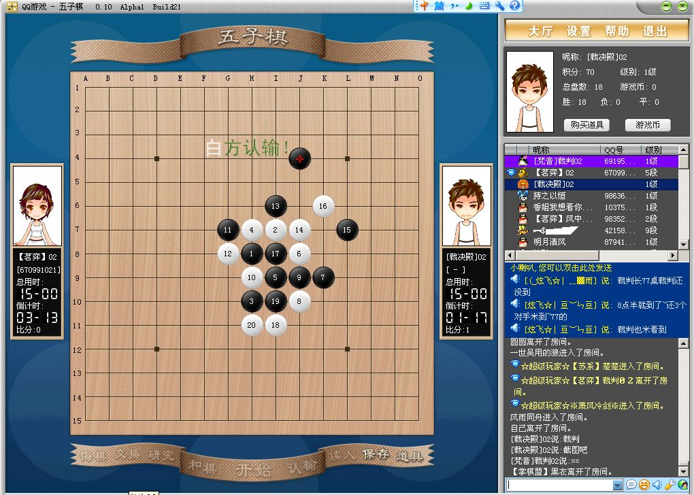

QQ“三棋一牌”五子棋比赛部分棋谱简评
#1 QQ“三棋一牌”五子棋比赛部分棋谱简评作者：屏蔽 发表时间：2008-6-23 20:50:54
以前很少评论网上的棋谱，这次尝试一下。
因为毕竟和实战区别太大了，呵呵~嗯……开始了。
我所引用的棋谱全部来自这个帖子：ShowPost.asp?ThreadID=4162
#2 Re:QQ“三棋一牌”五子棋比赛部分棋谱简评作者：屏蔽 发表时间：2008-6-23 20:57:40
此型，黑11很有创意！相信是看过许多棋谱，觉得这个点被白棋防到不太爽，于是取这个变化的。12常见反击型，以下的变化可以预料，似乎并未见黑棋有极好的扭转之势……26强攻！至黑29？……第一感觉是白棋局部可以胜了，事实也确实如此……不过白30！乍一看右上方白棋岌岌可危，结果拆了半天就是没有胜，呃……黑31尽可能上下兼顾，实战进行至白36，事实上是白必胜了，不过后面还有一些反击……黑棋投了？看得真够深远的……
#3 Re:QQ“三棋一牌”五子棋比赛部分棋谱简评作者：屏蔽 发表时间：2008-6-23 21:07:59

和棋大定式，但是白32是有趣的选择（我个人很喜欢的），白34据说是唯一防，黑35稳妥，黑37的位置是常见进攻好点，但是放到这个实际情况中是杀不掉的。但38弱？39-40后有黑必胜的感觉……可惜实战中没有这么积极的走法。之后双方纠缠，至白52，左边的交换终于显出了弊端，白54好点！但黑55也很稳妥。上方交换完毕后至黑75，白棋超时，嗯……以下白棋进攻的空间确实不够了，但至少是和棋。可惜的一局。
#4 Re:QQ“三棋一牌”五子棋比赛部分棋谱简评作者：屏蔽 发表时间：2008-6-23 21:23:52

黑9的变化我没有分析过，不过看起来白棋强攻取胜的希望渺茫，黑棋反击太多了……至白24定型后，这里有个重要的选择，因为左右两边黑棋都可以选择，但是左边白棋的反击比较强，我是比较推荐25-31，很有感觉的样子……因为受到黑棋的制约，白棋在左边也搞不出什么东西的……实战变化复杂，至白28危险而自然的防守……我忽然发现，执黑的棋手在进攻时似乎总能给对手留下反击，这可能也是他进攻不利的重要原因吧……白46后，右边黑棋局部没有机会，很郁闷……自白50起，白棋展开了一场无比精彩的进攻取胜！其中白54做杀是关键一手！55-e5唯一！
#5 Re:QQ“三棋一牌”五子棋比赛部分棋谱简评作者：屏蔽 发表时间：2008-6-23 21:31:44

针对白6、8的变化，黑9是此际要点，很柔韧的进攻。但感觉到白18防守为止，白棋显得更加稳定。黑19常见形状，白22？22-30应该最强……眼见白棋优势越来越大，但黑棋不甘示弱~白34漏招！忽略了黑棋依然保留的进攻路线！黑37后胜法明显。
#6 Re:QQ“三棋一牌”五子棋比赛部分棋谱简评作者：屏蔽 发表时间：2008-6-23 21:32:32
休息一下~今天太累了~待会休息过来了就接着写，没休息过来就明天写，反正考完了，嘿嘿！#7 Re:Re:QQ“三棋一牌”五子棋比赛部分棋谱简评作者：逆刃 发表时间：2008-6-23 21:36:44
引用：真爽啊！
原文由 屏蔽 发表于 2008-6-23 21:32:32 :
休息一下~今天太累了~待会休息过来了就接着写，没休息过来就明天写，反正考完了，嘿嘿！
#8 Re:QQ“三棋一牌”五子棋比赛部分棋谱简评作者：屏蔽 发表时间：2008-6-24 13:56:14
休息一天接着写~哈哈~#9 Re:QQ“三棋一牌”五子棋比赛部分棋谱简评作者：屏蔽 发表时间：2008-6-24 14:05:08
有意思的一局棋，关于黑11的变化，白方应对不错，以前中村茂也执白下过这个变化，综合起来分析，黑21定型后f6是迟早要占据的绝好点~但实战至白28，黑棋获得一个控制下方优势的机会（g11强防），而f6的位置也不是那么重要了（因为黑27的阻挡），可惜实战黑29弱！白30自然的一手，及至黑33最后的败招，“四四”禁手简单抓到。
#10 Re:QQ“三棋一牌”五子棋比赛部分棋谱简评作者：屏蔽 发表时间：2008-6-24 14:08:22

水月的这个变化我最近刚刚拆过，感觉并不是很复杂，白棋的手段也谈不上什么欺骗性啊？……真是奇怪了，不知道为什么这个变化在棋谱中占了那么大的空间，可能我还没点到最强防？……嗯……感觉就是定式走完后简单输掉的一局。
#11 Re:QQ“三棋一牌”五子棋比赛部分棋谱简评作者：屏蔽 发表时间：2008-6-24 14:12:46

这个白8的变化于黑棋还是很舒服的。但15-16正着！黑17后似乎白棋有机会对两侧的黑棋进行治孤。但18、20突然死亡的两手！个人感觉黑19可以更积极些，否则20在中间打断的话，取胜也并非容易。以下应该还有一些变化，但白棋直接认输了。这局的感觉好像白棋无心恋战。
#12 Re:QQ“三棋一牌”五子棋比赛部分棋谱简评作者：屏蔽 发表时间：2008-6-24 14:16:47

这局很难评论些什么，黑棋的水平确实还有所欠缺。
#13 Re:QQ“三棋一牌”五子棋比赛部分棋谱简评作者：屏蔽 发表时间：2008-6-24 14:26:33

黑5似乎是错误的打点，5-11应该是必胜，不过这个5的结论我也没有确认过。9-29是一形状，此变化至白12，黑棋已经无法取胜了。17-19单盖我觉得最好，给上方保留一些余味……但下方白棋交换不利，以致于黑29后黑棋依然有较大的优势。30-33如何？实战的白30黑棋简单追胜了，然后……黑棋认输了……大家看对话框吧……

#14 Re:QQ“三棋一牌”五子棋比赛部分棋谱简评作者：屏蔽 发表时间：2008-6-24 14:37:56

看来白棋对这个变化准备不足，不管黑13是不是变招……这个局面，只有在万不得已的情况下白棋才能主动防守。白20的交换也成问题，20-25，22-20是理想的选择。以下黑棋步步施压，直到黑25先冲四！黑27！白30不取外势是最后的败招，32逆止则33-I9基本必胜，实战中黑棋也是简明的必胜手段。
#15 Re:QQ“三棋一牌”五子棋比赛部分棋谱简评作者：屏蔽 发表时间：2008-6-24 14:48:03

又是有意思的一局（这次比赛好像一直很有意思……），黑5-G8/G9是正确的两打，实战嘛……黑7之后基本必胜，但11-13（白棋跟），13-11才是必胜手！黑11后12-I11！
#16 Re:QQ“三棋一牌”五子棋比赛部分棋谱简评作者：屏蔽 发表时间：2008-6-24 14:49:28
休息……明天继续……我才发现真的好拖沓哦……#17 Re:Re:QQ“三棋一牌”五子棋比赛部分棋谱简评作者：熊宝宝 发表时间：2008-6-24 20:40:32
引用：
原文由 屏蔽 发表于 2008-6-23 21:23:52 :
黑9的变化我没有分析过，不过看起来白棋强攻取胜的希望渺茫，黑棋反击太多了……至白24定型后，这里有个重要的选择，因为左右两边黑棋都可以选择，但是左边白棋的反击比较强，我是比较推荐25-31，很有感觉的样子……因为受到黑棋的制约，白棋在左边也搞不出什么东西的……实战变化复杂，至白28危险而自然的防守……我忽然发现，执黑的棋手在进攻时似乎总能给对手留下反击，这可能也是他进攻不利的重要原因吧……白46后，右边黑棋局部没有机会，很郁闷……自白50起，白棋展开了一场无比精彩的进攻取胜！其中白54做杀是关键一手！55-e5唯一！
25-31白棋简单胜。
=======上图对应的爱五子棋谱代码如下，以便你拆解：========
h8h9j10i9i10j8g9f10k7f11g10g11h11e9d8k10f12h13i12j13h12g12i14i11i6e10d9i13g13k13l13k11
======================================================
=======上图对应的爱五子棋谱代码如下，以便你拆解：========
h8h9j10i9i10j8g9f10k7f11g10g11h11e9d8k10f12h13i12j13h12g12i14i11i6e10d9i13k13e8e11f9
======================================================
［ 有志青年 于 2008-6-25 7:12:53 时奖励此帖[金币加 20 威望加1］
#18 Re:Re:QQ“三棋一牌”五子棋比赛部分棋谱简评作者：熊宝宝 发表时间：2008-6-24 20:43:24
引用：
原文由 屏蔽 发表于 2008-6-24 14:05:08 :有意思的一局棋，关于黑11的变化，白方应对不错，以前中村茂也执白下过这个变化，综合起来分析，黑21定型后f6是迟早要占据的绝好点~但实战至白28，黑棋获得一个控制下方优势的机会（g11强防），而f6的位置也不是那么重要了（因为黑27的阻挡），可惜实战?9弱！白30自然的一手，及至黑33最后的败招，“四四”禁手简单抓到。
g11根本不是什么强防，白棋同样简单胜
=======上图对应的爱五子棋谱代码如下，以便你拆解：========
h8h9h6i10i6i9g9g8j11i7j7i11i8k9k8l9j9h5j10j8l10f7e6g6j12j13e8e7g5h10g11f9
======================================================
#19 Re:QQ“三棋一牌”五子棋比赛部分棋谱简评作者：熊宝宝 发表时间：2008-6-24 20:47:43
实在看不下去了，阁下平时爱不懂装懂乱评自己的棋也就罢了，别人的棋你根本没看懂也拿来胡评一气，真受不了。北京棋手如果都像你这么井底之蛙加夜郎自大，难怪这次团体赛会惨败。奉劝你自我感觉不要太好了，多学学棋，少来乱评棋。没水平却爱出风头是你自己的事，但别在网上误导初学者。#20 Re:QQ“三棋一牌”五子棋比赛部分棋谱简评作者：屏蔽 发表时间：2008-6-25 0:27:12
谢谢您的指导~我一定会继续努力的~

#21 Re:Re:QQ“三棋一牌”五子棋比赛部分棋谱简评作者：闫荣辉 发表时间：2008-6-26 14:09:52
哈我先复制下啦！回去慢慢看！
#22 Re:QQ“三棋一牌”五子棋比赛部分棋谱简评作者：雨一直下 发表时间：2008-6-26 19:01:18
原文地址：http://hi.baidu.com/%C6%C1%B1%CE/blog/item/4a2346ee2dcef6feb3fb9539.html
吾学棋三年八月有余，征战比赛若干，略有小成，自认青年之中少有匹敌，全国上下亦居前列。然近日有幸目睹吴昊、李洪斌、李睿凡等前辈之招法，霸气十足却不失细腻，攻防腾挪亦不落后手，深感暂时难以望其项背，始察自身之漏洞，才觉根基不稳，内力不足，必胜杀不出，平衡走不好，定式量不够，计算力不高。零八年六月第二届全国团体赛后，痛定思痛，必得深研前谬，改过自新。忆往昔，师从先生艺黠，校内选修课之中并非学棋正途，所练无非计算力而已，何况浅尝辄止。吾等青春，年少气盛，演算之中并不觉疲惫，然尚欠对棋本身之理解，及至今日亦无改观，QQGame、ORC等试炼之地亦常充当被砍之角色。公历二零零八年六月十一子夜十分，吾于空间之中立下长志：当练花浦，熟必胜，打《五珠定石》，背《五手二打》，强局练攻，难局练守，深研前辈所留之棋谱，融合浩瀚如烟之定式，搜习题，强计算，早日取个攻防制衡之手，体会道法自然之妙。
以上是楼主在全团赛后写的吧，偶与LZ并不认识，但从文中可以看出，LZ是一个谦虚好学的人，而且是深爱五子棋的人，这点已经让人认同。
个人私下认为，论坛的繁荣是需要见证每一步成长或每件事的过程，只有互相把对棋的理解或见解提出来，哪怕是错的，也可以互相讨论，有利于进步，因为这里只是一个论坛，并不是公开课，如果棋评只能是顶级高手来写，那对于初学者而言是听教科书了，而且中村安度大鱼李老师们也不见得都有时间来写棋评。所以不如大家讨论，有错误可以提出来研究，这样倒进步更快呢。 但没必要进行过激的人身攻击。
但没必要进行过激的人身攻击。 毕竟五子棋目前是缘于众多棋手和爱好者以及象有志这样热血青年对五子棋的热爱发展的，除了花费很多时间外，很多棋手比赛也要花费不少，五子棋的发展已经够难了，写个棋评，哪怕有不当之处，也不用这么指责了吧。那以后谁敢发表对棋局的看法或虾米意见哇？
毕竟五子棋目前是缘于众多棋手和爱好者以及象有志这样热血青年对五子棋的热爱发展的，除了花费很多时间外，很多棋手比赛也要花费不少，五子棋的发展已经够难了，写个棋评，哪怕有不当之处，也不用这么指责了吧。那以后谁敢发表对棋局的看法或虾米意见哇？
以上意见纯属个人意见~~偶只想有个很好的学习氛围~~
［ 有志青年 于 2008-6-26 19:16:16 时奖励此帖[金币加 20 威望加1］
#23 Re:QQ“三棋一牌”五子棋比赛部分棋谱简评作者：逆刃 发表时间：2008-6-26 21:06:11
屏蔽兄弟真是一人才，五子棋下得好是自然，英语好我也认了，没想到语文水平也如此之高！
#24 Re:QQ“三棋一牌”五子棋比赛部分棋谱简评作者：我爱五子棋伯园 发表时间：2008-10-14 14:22:31
继续努力写，我们会继续关注的